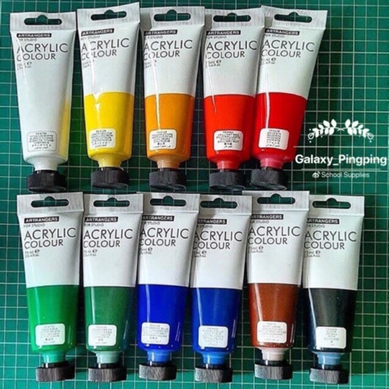

Art Supplies I Use!
These Are The List Of Art Supplies I use for My traditional artworks!!
My Social Media Accounts:
Prismacolor Colored Pencils
Prismacolors are very easy to blend, which is ideal for creating strong colors, variations in hue, and transitions from light to dark. Professional colored pencils are also more lightfast than regular colored pencils, so they are more resistant to fading over time
Any Mechanical Pencil
Mechanical pencils are great because they don't need to be sharpened, the thickness of the lead can be controlled, precision work can be done without interruption, and mechanical pencils last longer. There's no doubt that mechanical pencils feel a lot different than traditional, sharpened pencils.
Kneadable Eraser
Kneaded erasers are a good choice generally for a mess-free experience, and Faber Castell Kneaded Erasers are particularly clean. The soft and pliable eraser lifts pencil marks and charcoal off the page and will not disturb watercolor or other paints. Even when rubbing is required, it does not shed.
Alcohol Markers
Alcohol markers are great for cartooning. They are very vibrant and easy to blend, yet we need to be careful as they bleed through the paper quite easily. As the marker pigments are infused with alcohol this means that they are fluid and very satisfying to put onto the paper and thus gives a almost digital finish to the artwork.

Acrylic Paint
Acrylic paint is very neat to use because it can stick to any surface and you can paint almost entirely everything in your surroundings. Acrylic paint is great for block colors such as a cartoonish shading, though, do note that they do not blend quite well when compared to oil paints.
Fine Liners
Fineliners are great for line weight and line variation in lineart, which then makes the drawing very appealing to the eye as the different line variations and thicknesses will contrast well with the surroundings even without color to your drawing. Fine Liners are also used in the making of handmade mangas which is very cool.